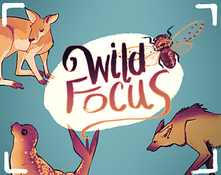

Wild Focus
Steady hands. Perfect shot.

The team
What it's about
A desperate photographer needs to take stellar photos of animals around the world to support himself. If his portfolio is good enough, he could earn a place at the top photography academy.
The challenge
Wild Focus was made in two days for SAGJ2024, a game jam whose theme was “Depth”.
Designer and programmer
I was the programmer and co-designer on a team of five.
What I built it with
How it plays
You play a struggling photographer who must shoot animals in their natural habitats to build a portfolio. Aim the camera and zoom in, then time each shot around his shaky hands, with only 15 photos to spend.
Scout
Move the camera around the habitat to find your subject.
Zoom
Zoom in and out to frame the perfect shot.
Time it
Wait for the shaky hands to settle, then take the photo.
Build the portfolio
Tick animals off the to-do list before the 15 photos run out.
What's in the game
Under the hood
Camera and zoom
A free-moving camera with scroll zoom for framing shots.
Hand shake
The photographer's shaky hands make every shot a timing puzzle.
Shot list
A to-do list of animals the portfolio must include.
Photo budget
Only 15 photos, so every shot has to count.
In the game
Demo video and download
Download Wild Focus
Free to download on itch.io. Scan the code or use the link.